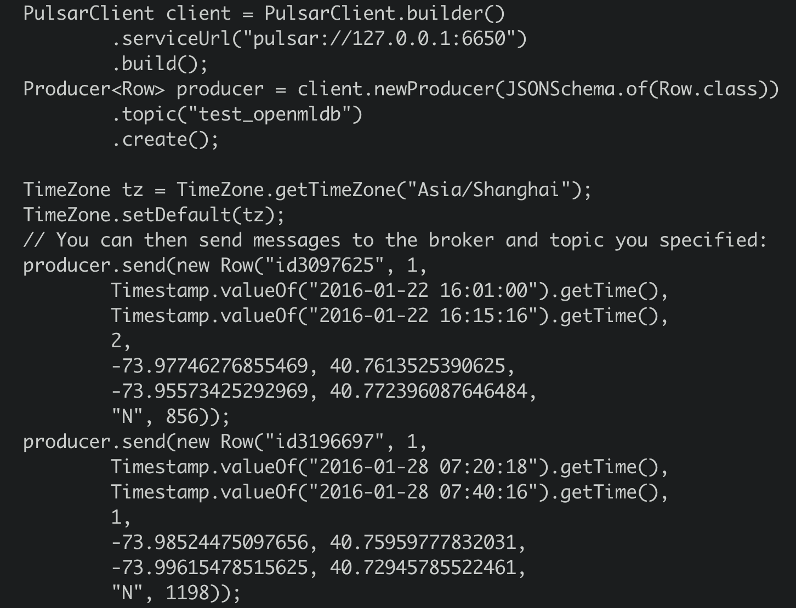

OpenMLDB Pulsar Connector：接入实时数据流
Contents
OpenMLDB Pulsar Connector：接入实时数据流#
简介#
Apache Pulsar是一个云原生的，分布式消息流平台。它可以作为OpenMLDB的在线数据源，将实时的数据流导入到OpenMLDB在线。了解更多Pulsar，请参考官网https://pulsar.apache.org/。我们开发了在Pulsar中使用的OpenMLDB JDBC Connector，可以无障碍地使Pulsar连接到OpenMLDB。在这篇文档中，你将学习到这个connector的概念与使用方法。
注意，为了使演示更简单，本文中将使用Pulsar Standalone，OpenMLDB集群和一个简单JSON消息生产者程序，来演示OpenMLDB JDBC Connector是如何工作的。该connector是完全可以在Pulsar Cluster中正常使用的。
See also
关于 Pulsar 的 OpenMLDB Connector 的详细信息，也可以参考 Pulsar 官网相关介绍。
概览#
下载#
你需要下载本文中所需要的所有文件，请点击files下载。文件包括connector包，schema文件，配置文件等等。
如果你只想要下载connector包用于自己的项目，请点击connector snapshot。
流程#
使用connector的简要流程，如下图所示。我们接下来将详细介绍每一步。我们也录制了所有步骤，详情见terminalizer分享, 你也可以在此下载录制的脚本demo.yml。
整体上，使用流程可以概括为三步：
在 OpenMLDB 创建相关的数据库和表
在 Pulsar 创建 sink，来把 Pulsar 数据流和 OpenMLDB 连接起来，同时需要在 Pulsar 配置相应的 schema，使得数据流可以正确的被 OpenMLDB 接收并且存入到线上数据库。
进行测试或者正常使用

步骤 1：在 OpenMLDB 创建数据库和数据表#
启动 OpenMLDB 集群#
使用Docker可以快速启动OpenMLDB，除此之外，我们还需要创建测试用的表。创建OpenMLDB详请可以参考集群版OpenMLDB 快速上手。
Caution
目前只有OpenMLDB集群版可以作为sink的接收端，数据只会sink到集群的在线存储中。
我们更推荐你使用‘host network’模式运行docker，以及绑定文件目录‘files’，sql脚本在该目录中。
docker run -dit --network host -v `pwd`/files:/work/pulsar_files --name openmldb 4pdosc/openmldb:0.6.0 bash
docker exec -it openmldb bash
在OpenMLDB容器中，启动集群:
./init.sh
Caution
在macOS平台上，即使使用host网络，也不支持从容器外部去连接容器内的 OpenMLDB 服务器。但从容器内，去连接别的容器内的OpenMLDB服务，是可行的。
创建表#
我们使用一个脚本快速创建表，脚本内容如下：
create database pulsar_test;
use pulsar_test;
create table connector_test(id string, vendor_id int, pickup_datetime bigint, dropoff_datetime bigint, passenger_count int, pickup_longitude double, pickup_latitude double, dropoff_longitude double, dropoff_latitude double, store_and_fwd_flag string, trip_duration int);
desc connector_test;
执行脚本:
/work/openmldb/bin/openmldb --zk_cluster=127.0.0.1:2181 --zk_root_path=/openmldb --role=sql_client < /work/pulsar_files/create.sql

Note
目前，Pulsar中JSONSchema和JDBC base connector都不支持’java.sql.Timestamp’。所以我们使用’long’作为timestamp列的数据类型（在OpenMLDB可以使用long作为时间戳）。
步骤 2：在 Pulsar 创建 sink 和 schema#
启动 Pulsar Standalone#
使用docker，可以更简单快速的启动Pulsar。我们推荐你使用’host network’来运行docker，这样可以避免诸多容器相关的网络连接问题。而且，我们需要使用pulsar-admin来进行sink创建，这个程序在Pulsar镜像内。所以，我们使用bash运行容器，在容器内部逐一执行命令。此处，也需要绑定’files’文件目录。
docker run -dit --network host -v `pwd`/files:/pulsar/files --name pulsar apachepulsar/pulsar:2.9.1 bash
docker exec -it pulsar bash
在Pulsar容器中，启动standalone服务端。
bin/pulsar-daemon start standalone --zookeeper-port 5181
Note
OpenMLDB服务已经使用了端口2181，所以此处我们为Pulsar重新设置一个zk端口。我们将使用端口2181来连接OpenMLDB，但Pulsar standalone内的zk端口不会对外造成影响。
你可以检查一下Pulsar是否正常运行，可以使用ps或者检查日志。
ps axu|grep pulsar
当你启动一个本地standalone集群，会自动创建’pulic/default’ namesapce。这个namespace用于开发，参考pulsar文档.
我们将在此namespace中创建sink
See also
如果你想要在本地直接启动Pulsar，参考Set up a standalone Pulsar locally.
Q&A#
Q: 碰到以下问题是什么原因
2022-04-07T03:15:59,289+0000 [main] INFO org.apache.zookeeper.server.NIOServerCnxnFactory - binding to port 0.0.0.0/0.0.0.0:5181
2022-04-07T03:15:59,289+0000 [main] ERROR org.apache.pulsar.zookeeper.LocalBookkeeperEnsemble - Exception while instantiating ZooKeeper
java.net.BindException: Address already in use
A: Pulsar需要一个未被使用的端口来启动zk，端口5181页已经被使用，需要再更改一下’–zookeeper-port’的端口号。
Q: 8080端口已被使用？
A: 8080是’webServicePort’默认配置端口，在conf/standalone.conf中，可以更换这个端口。但注意，pulsar-admin会使用conf/client.conf中的’webServiceUrl’进行连接，也需要同步更改。
Q: 6650端口已被使用？
A: 需要同步更改conf/standalone.conf中的’brokerServicePort’和conf/client.conf中的’brokerServiceUrl’配置项。
Connector安装(Optional)#
前面的步骤中我们绑定了’files’目录，里面已经提供了connector的nar包。我们可以使用“非内建connector”模式来设置connector(即在sink配置中指定’archive’配置项，将在下一个步骤中描述)。
但如果你希望将OpenMLDB connector作为内建的connector，你需要创建’connectors’目录，并拷贝nar文件到’connectors’目录。
mkdir connectors
cp files/pulsar-io-jdbc-openmldb-2.11.0-SNAPSHOT.nar connectors/
如果在Pulsar运行时，你想改变或增加connector，你可以通知Pulsar更新信息：
bin/pulsar-admin sinks reload
当OpenMLDB connector成为内建connector时，它的sink类型名为’jdbc-openmldb’，你可以直接使用这个类型名来指定使用OpenMLDB connector。
创建sink#
我们使用’public/default’这个namespace来创建sink, 我们需要一个sink的配置文件, 它在files/pulsar-openmldb-jdbc-sink.yaml，内容如下：
tenant: "public"
namespace: "default"
name: "openmldb-test-sink"
archive: "files/pulsar-io-jdbc-openmldb-2.11.0-SNAPSHOT.nar"
inputs: ["test_openmldb"]
configs:
jdbcUrl: "jdbc:openmldb:///pulsar_test?zk=localhost:2181&zkPath=/openmldb"
tableName: "connector_test"
Note
‘name’：sink名。
‘archive’：我们使用’archive’来指定sink connector, 所以这里我们是将OpenMLDB connector当作非内建connector使用。
‘input’：可以是多个topic的名字，本文只使用一个。
‘config’：用于连接OpenMLDB集群的jdbc配置。
接下来，创建这个sink并检查。注意，我们设置的输入topic是’test_openmldb’，后续步骤需要使用到。
./bin/pulsar-admin sinks create --sink-config-file files/pulsar-openmldb-jdbc-sink.yaml
./bin/pulsar-admin sinks status --name openmldb-test-sink

创建 Schema#
上传schema到topic ‘test_openmldb’，schema类型是JSON格式。后续步骤中，我们将生产一样schema的JSON消息。schema文件是files/openmldb-table-schema，内容如下：
{
"type": "JSON",
"schema":"{\"type\":\"record\",\"name\":\"OpenMLDBSchema\",\"namespace\":\"com.foo\",\"fields\":[{\"name\":\"id\",\"type\":[\"null\",\"string\"],\"default\":null},{\"name\":\"vendor_id\",\"type\":\"int\"},{\"name\":\"pickup_datetime\",\"type\":\"long\"},{\"name\":\"dropoff_datetime\",\"type\":\"long\"},{\"name\":\"passenger_count\",\"type\":\"int\"},{\"name\":\"pickup_longitude\",\"type\":\"double\"},{\"name\":\"pickup_latitude\",\"type\":\"double\"},{\"name\":\"dropoff_longitude\",\"type\":\"double\"},{\"name\":\"dropoff_latitude\",\"type\":\"double\"},{\"name\":\"store_and_fwd_flag\",\"type\":[\"null\",\"string\"],\"default\":null},{\"name\":\"trip_duration\",\"type\":\"int\"}]}",
"properties": {}
}
上传并检查schema的命令，如下所示:
./bin/pulsar-admin schemas upload test_openmldb -f ./files/openmldb-table-schema
./bin/pulsar-admin schemas get test_openmldb

步骤 3：测试#
发送消息#
我们使用两条OpenMLDB镜像中data/taxi_tour_table_train_simple.csv的样本数据，作为测试用的消息。数据如下图所示：

Producer JAVA代码，详情见demo producer。核心代码如下： 
可以看到，producer将发送两条消息到topic ‘test_openmldb’。这之后，Pulsar将读到消息，并将其写入OpenMLDB集群的在线存储中。
程序包在’files’中，你可以直接运行它：
java -cp files/pulsar-client-java-1.0-SNAPSHOT-jar-with-dependencies.jar org.example.Client
检查#
在Pulsar中检查#
我们可以检查Pulsar中的sink状态：
./bin/pulsar-admin sinks status --name openmldb-test-sink

Note
“numReadFromPulsar”: pulsar发送了2条message到sink实例中。 “numWrittenToSink”: sink实例向OpenMLDB写入2条message。
在OpenMLDB中检查#
我们可以在OpenMLDB在线存储中查询到这些消息数据。查询脚本select.sql内容如下：
set @@execute_mode='online';
use pulsar_test;
select *, string(timestamp(pickup_datetime)), string(timestamp(dropoff_datetime)) from connector_test;
在OpenMLDB容器中执行脚本:
/work/openmldb/bin/openmldb --zk_cluster=127.0.0.1:2181 --zk_root_path=/openmldb --role=sql_client < /work/pulsar_files/select.sql